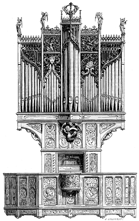

BUFFET (d'orgues), s. m. On désigne ainsi les armatures en charpente et menuiserie qui servent à renfermer les orgues des églises. Jusqu'au XVe siècle, il ne paraît pas que les grandes orgues fussent en usage. On ne se servait guère que d'instruments de dimensions médiocres, et qui pouvaient être renfermés dans des meubles posés dans les chœurs, sur les jubés ou sur des tribunes plus ou moins vastes destinées à contenir non seulement les orgues, mais encore des chantres et musiciens. Ce n'est que vers la fin du XVe siècle et au commencement du XVIe que l'on eut l'idée de donner aux orgues des dimensions inusitées jusqu'alors, ayant une grande puissance de son et exigeant, pour les renfermer, des charpentes colossales. Les buffets d'orgues les plus anciens que nous connaissions ne remontent pas au delà des dernières années du XVe siècle ; et ces orgues ne sont rien auprès des instruments monstrueux que l'on fabrique depuis le XVIIe siècle. Cependant, dès le XIVe siècle, certaines orgues étaient déjà composées des mêmes éléments que celles de nos jours : claviers superposés et pouvant se réunir, tuyaux d'étain en montre, trois soufflets, jeux de mutation, et ce qui doit être noté ici particulièrement, ces orgues avaient un positif placé derrière l'organiste et dans lequel on avait mis des flûtes dont l'effet est signalé comme très agréable.
M. Félix Clément, à qui nous devons des renseignements précieux sur l'ancienne musique et sur les orgues, nous fait connaître qu'il a trouvé, dans les archives de Toulouse, un document fort curieux sur la donation faite à une confrérie, par Bernard de Rosergio, archevêque de Toulouse, d'un orgue, à la date de 1463. Il résulte de cette pièce que cinq orgues furent placées sur le jubé dans l'ordre suivant : un grand orgue s'élevait au milieu, derrière un petit orgue disposé comme l'est actuellement le positif ; un autre orgue, de petite dimension, était placé au haut du grand buffet et surmonté d'un ange ; à droite et à gauche du jubé se trouvaient deux autres orgues, dont deux confréries étaient autorisées à se servir, tandis que l'usage des trois premiers était exclusivement réservé aux chanoines et au chapitre de la cathédrale. Les cinq instruments pouvaient, du reste, résonner ensemble à la volonté de l'archevêque1.
« L'église de Saint-Severin, dit l'abbé Lebeuf2, est une des premières de Paris où l'on ait vu des orgues : il y en eut dès le règne du roi Jean, mais c'était un petit buffet ; aussi l'église n'étoit-elle alors ni si longue ni si large. J'ai lu dans un extrait du nécrologue manuscrit de cette église que, l'an 1358, le lundi après l'Ascension, maître Reynaud de Douy, écolier en théologie à Paris et gouverneur des grandes églises de la parouesse Saint-Severin, donna à l'église une bonne orgues et bien ordenées. Celles que l'on a vu subsister jusqu'en 1747, adossées à la tour de l'église, n'avoient été faites qu'en 1512... »
Au XVe siècle, on parle, pour la première fois, d'orgues de seize et même de trente-deux pieds ; les buffets durent donc prendre, dès cette époque, des dimensions monumentales.

|
|
| Figure 1 |
Perpignan :
Au XVIe siècle, tous les jeux de l'orgue actuel étaient en usage et formaient un ensemble de quinze cents à deux milles tuyaux. L'orgue qui passe pour le plus ancien en France est celui de Soliès-Ville dans le Var3. Celui de la cathédrale de Perpignan date des premières années du XVIe siècle ; nous en donnons ici (fig. 1) la montre. Le buffet se ferme au moyen de deux grands volets couverts de peintures représentant l'Adoration des Mages, le baptême de Notre-Seigneur et les quatre Évangélistes. Un positif, placé à la fin du XVIe siècle, est venu défigurer la partie inférieure de la montre ; le dessin que nous donnons ici le suppose enlevé. Le positif n'est pas, d'ailleurs, indispensable dans les grandes orgues. Lorsque le facteur peut disposer son mécanisme sur une tribune assez spacieuse pour placer ses sommiers dans le corps principal du buffet, le positif n'est plus qu'une décoration qui cache l'organiste aux regards de la foule. Un clavier à consoles est préférable, car il est nécessaire que l'artiste puisse voir ce qui se passe dans le chœur. Il est probable, cependant, que les anciens facteurs trouvaient plus commode de placer le sommier du positif à une certaine distance des claviers, à cause du peu de largeur du mécanisme, tandis qu'en plaçant leurs sommiers dans l'intérieur du grand buffet, ils étaient obligés d'établir la correspondance par des abrégés, des registres, etc., dont la longueur devait amener des irrégularités dans la transmission des mouvements. Le buffet de la cathédrale de Perpignan est bien exécuté, en beau bois de chêne, et sa construction, comme on peut le voir, établie sur un seul plan, est fort simple ; elle ne se compose que de montants et de traverses avec panneaux à jour. Presque tous les tuyaux de montre sont utilisés. L'organiste, placé derrière la balustrade, au centre, touchait les claviers disposés dans le renfoncement inférieur ; la soufflerie est établie par derrière dans un réduit.
|  | |
| Figure 2 |
Hombleux en Picardie :
On va voir (fig. 2) le buffet et la tribune des orgues de l'église d'Hombleux (Picardie), qui datent du commencement du XVIe siècle. Ici, l'instrument est porté par des encorbellements, la partie inférieure n'ayant guère que la largeur nécessaire aux claviers et aux registres. Cette disposition permettait à des musiciens, joueurs d'instruments ou chanteurs, de se placer dans la tribune autour de l'organiste, assis dans la petite chaire portée sur un cul-de-lampe ; et, sous ce rapport, elle mérite d'être signalée. Du reste, même système de menuiserie qu'à Perpignan et à Soliès. Ce sont les tuyaux qui commandent la forme de la boiserie, celle-ci les laissant apparents dans toute leur hauteur et suivant leur déclivité. Nous citerons encore les buffets d'orgues de la cathédrale de Strasbourg, des églises de Gonesse, de Moret près Fontainebleau, de Clamecy, de Saint-Bertrand de Comminges, de la cathédrale de Chartres, qui datent de la fin du XVe siècle et du XVIe. La menuiserie de tous ces buffets est soumise à l'instrument et ne fait que le couvrir ; les panneaux à jour ne remplissent que les vides existants entre l'extrémité supérieure de ces tuyaux et les plafonds, afin de permettre l'émission du son ; quant au mécanisme et aux porte-vents, ils sont complètement renfermés entre les panneaux pleins des soubassements. Il arrivait souvent que, pour donner plus d'éclat aux monstres, les tuyaux visibles étaient gauffrés et dorés, rehaussés de filets noirs ou de couleur ; la menuiserie elle- même était peinte et dorée : tel est le buffet des grandes orgues de la cathédrale de Strasbourg. Presque tous les anciens buffets, comme celui de la cathédrale de Perpignan, étaient clos par des volets peints, que l'organiste ouvrait lorsqu'il touchait de l'orgue.